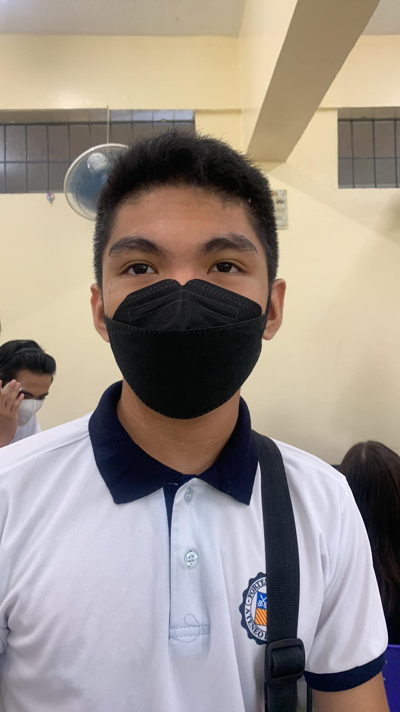

One of the people that assisted in this work is Dwayne Farris M. Morales. A transfer student heralding from the Zamboanga Branch of Ateneo and St. Columban High School. As of writing, they're 14 years old. He stands at roughly 5'4" and is somewhat timid. Not very fun to talk to either, honestly. 